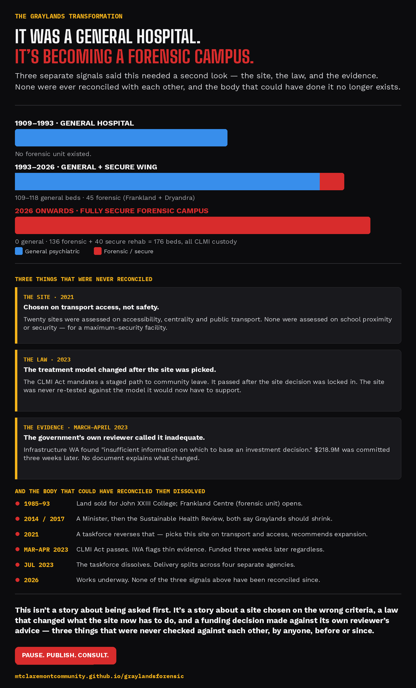

No one has published a safety case for this site.
The site was chosen in 2021 on transport and access — security and school proximity were not among the criteria. In 2023 the law changed, adding a staged path to supervised community access, after the site was already locked in. The government's own reviewer called the business case inadequate; it was funded three weeks later. The taskforce that could have re-tested the site against the new model dissolved that July. So the question that matters most here — whether this model is safe in this location — has never been assessed by anyone. We can't prove it isn't. The government hasn't shown it is.
Sign the petition, then register your support — together they tell the Government this isn't a handful of people.
- Graylands is proposed to become WA's only large-scale forensic mental health campus.
- Stage 1 would take forensic beds from about 45 to about 85.
- The long-term plan is 136 forensic beds and 40 mental health recovery beds, at an estimated total capital cost of $698.3 million.
- Four schools — one just 270 metres away — sit within 1km of the campus.
- No formal public consultation with residents or schools has been identified in the public record.
- The community is asking the Government to pause, release the evidence, and consult properly before the design is locked in.
Latest updates
See all updates →Letters sent, replies received, campaign milestones — the short version, so returning visitors don't have to re-read the whole site to see what's new.
Loading updates…
The site
John XXIII College shares a boundary with the proposed expansion. Quintilian School is across the road. The Claremont Therapeutic Riding Centre — which provides riding therapy for people with disability — sits directly against it.

Eight documented concerns
Each one is drawn from a government document, a parliamentary record, or credible reporting — not from speculation. Tap a card for the short version, or jump straight to the full sourced case.
If these eight concerns trouble you as much as they trouble us, here's where that goes.
Every claim is checkable
Wherever you see a small tag like this — Infrastructure WA, Mar 2023 — it marks a claim drawn directly from a named, publicly available source: a government report, Hansard, or credible media. The full list is on the Sources page, and every source is independently verifiable.